CLOSE
Fountains
CLOSE
Row House Project
 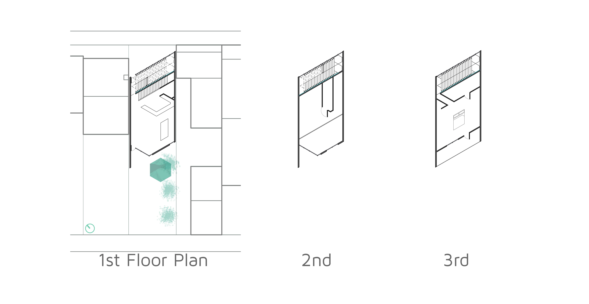
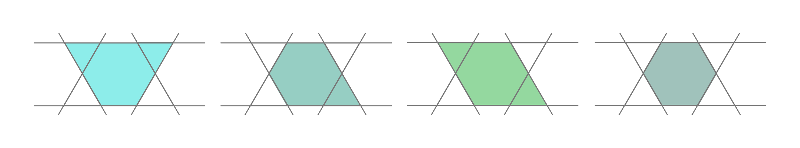
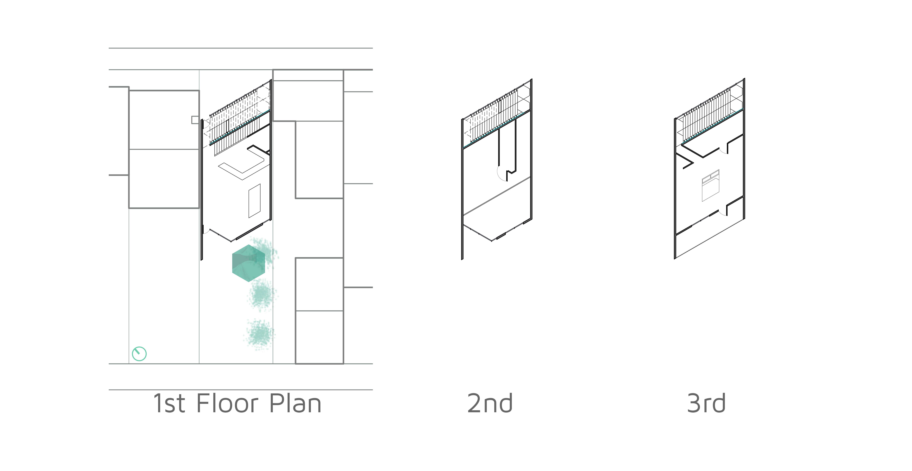
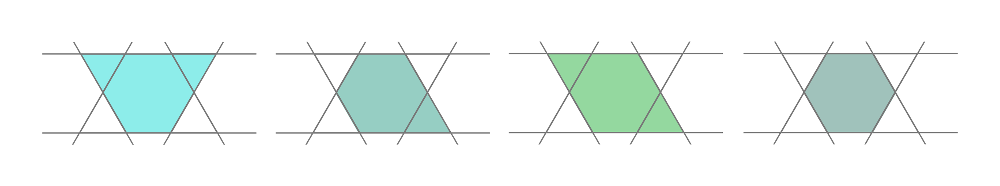
As part of this project we were asked to create a hexagon tile and incorporate it into the house design. I used it as a starting place, creating a grid based on it. Giving me the opportunity to create 4 basic shapes.


I wanted to incorporate a time-based aspect into the house, so I decided to use the tile to create a water fountain wall. The tiles are made out of copper allowing them to rust, changing color and texture, giving a new aspect to your house over the years.
Process
CLOSE
Scarf Design

Process

This project originated from one of my friends losing her favorite scarf, so I wanted to recreate it for her. At the time I was not an Illustrator user and wanted to add this tool to my knowledge base. This project stemmed from this idea, but in no way ended there. I took it further to enhance my knowledge of other tools and bring the design to fruition, from a concept to a final product that I could present to my friend. With such a graphic oriented project I wanted to break it down into smaller elements. Smaller elements help to create a language that was consistent through out the design, but one that was clear that the elements in the pattern had their own place within the background, middle ground and foreground elements. Breaking the project down helped to keep it on task and refined through all the iterations, starting from low-fidelity and eventually getting mockups and a final product.
Choosing the right colors
I decided to use the original reproduction as the starting point and part of the background elements of the final design.
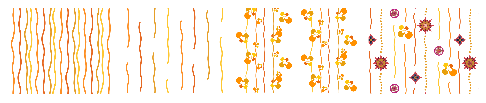
CLOSE
Watch

CLOSE
Projection Mapping
Using a set of boxes and Processing (Processing.org), I created a projection mapped choreography to a snippet of GreyHound.

CLOSE
Slotted Furniture


Process
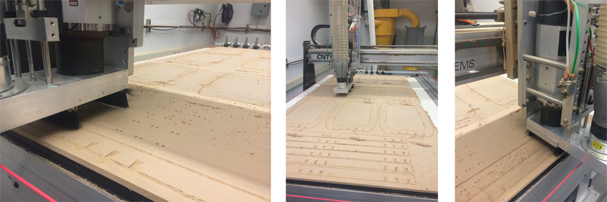CLOSE
Photography
CLOSE
Wood Working


Portal finished piece

Wood and Stone finished piece with detail shots
Process

Process sketches of the portal wood working piece.
Process sketches of the wood and stone sculpture piece.
CLOSE
Technical Drawings


CLOSE
LogoMarks
I created a set of LogoMarks using information about the people the LogoMarks are for, mostly their personality and some input like favorite color. Their personality helped influenced my decision on shape, color, style and the overall feel of the mark.
 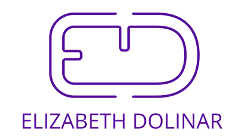
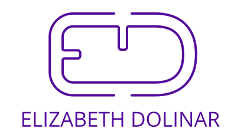
Process
Looking at the first logoMark, Yasmeen's, I starting on my computer within my vector program, Rhinoceros, I started with her initials "YA" looking out the outcome from current fonts and some interesting spaces and relations that could come of it. This was 1 of the 2 approaches I took. The second started from a stamp marking she already used to sign with, which is the marking below. First I vectorized it and then tried to overlay a geometry, which did not work out well. So I decided to ditch the geometry and if I was going to use the stamp I was going to use it in the vectorized form.


 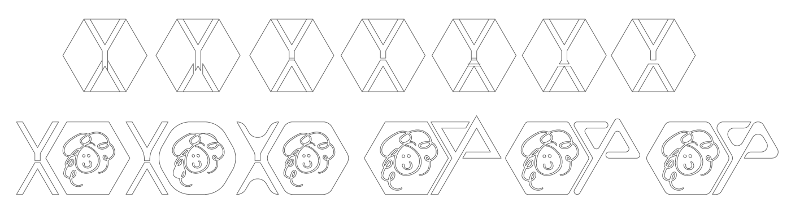
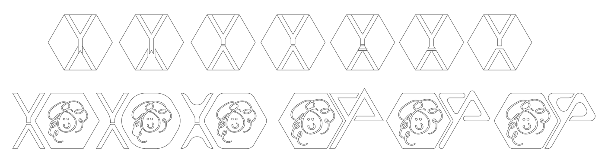
Once I had finished the design, the steps that followed were which color to use, font to use for her name that would sit next to the logoMark and whether or not to to still incorporate the stamp.
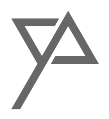
I knew the color was going to be a shade of pink, but the next step was deciding what shade, I wanted to go with a softer shade, something easy on the eyes but still clearly pink. Finally I choose the shade on the left. Soft, pink, not so in your face, and not so red either.

I played around with the stamp and the final iteration logo to see what could come of it and if it made sense to bring them together as the stamp was already part of her "branding". As the stamp was more free-flow and natural in character I wanted to use a circle, less harsh of a shape and I also tried using triangles to match the logoMark. It did not seem to work for me to combine the 2 into 1 identity, but out of all of them I enjoy the bottom one the most. I like to call it the Starbucks variation.
Choosing a font was the next step. I wanted to use a sans serif font as the logo also gave a sans serif vibe. The logo had this certain weight to it and I wanted to complement it with the weight of the font.

This gave me the final logoMark. I took it 1 step further and created a website to be used as a portfolio. Using the same spirit from the logoMark and extending it to the web.
CLOSE
CommandBar (Photoshop Extension)
As an Adobe creative suites user, AutoDesk and Rhinoceros 3D user, I realized there are a couple very intuitive feature missing in the creative suite. One of the best and simplest features in AutoCAD and Rhino is the universal search or command bar. It helps pull up the tool you need without having to remember the short cut or the icon associated with it. The command bar also exists in these more technical applications because there are many tools that one could use. If short cuts were implemented for all of these tools, they would require several keys each and would create a tool bar that was the entire interface. Another thing I noticed was for the Windows user there was no built-in way to search for an action in the drop down menus as you can on a Mac within the "Help" menu.
The “Help” menu search feature is a tool I use often, especially when I can’t remember where I tool is located. To help out my Windows friends, I decided to write a Photoshop Extension, called CommandBar, which functions like the universal search in Rhino. Another reason this is really useful is a result of the workflow we have in the Carnegie Mellon Architecture program. In our workflow we move constantly between Rhino and Photoshop to create and touch up renders. Once we get used to the search in Rhino, not having one in Photoshop is a nuisance and slows down the production process. However, this program can be used more generally for architecture students and even help Mac users use Photoshop on a Windows machine.

CLOSE
Lustre (Fashion Line)
I worked on this line with two of my friends and colleagues, Carolina Tamayo and Alyssa Hamilton.
Photo Credit: Jonathan Leung, Yutong Chen, Victor Song
Process